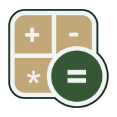

<footer class="site-footer">
  <div class="section-container site-footer__container">

    <div class="site-footer__top">
      <a href="index.html" class="site-logo" aria-label="TeraKira home">
      
      <span>TeraKira</span>
    </a>

      <div class="site-footer__links">

        <div class="site-footer__column">
          <h3>Company</h3>
          <a href="../about.html">About Us</a>
          <a href="../index.html#consultation-form">Contact</a>
          <a href="../pricing.html">Pricing</a>
        </div>

        <div class="site-footer__column">
          <h3>Product</h3>
          <a href="../services-bookkeeping.html">Bookkeeping</a>
          <a href="../services-catch-up-bookkeeping.html">Catch-Up</a>
          <a href="../services-tax-resolution.html">Tax Compliance Support</a>
          <a href="../services-invoice-management.html">Invoices</a>
        </div>

        <div class="site-footer__column">
          <h3>Resources</h3>
          <a href="../services-bookkeeping.html#How-it-works">How It Works</a>
          <a href="../faq.html">FAQ</a>
        </div>

      </div>
    </div>

    <div class="site-footer__bottom">
      <p>© 2026 TeraKira Bookkeeping Sdn Bhd (No Syarikat: 202601014978 (1677076-T)). All rights reserved.</p>
      <p>Kuala Lumpur, Malaysia</p>
    </div>

  </div>
</footer>